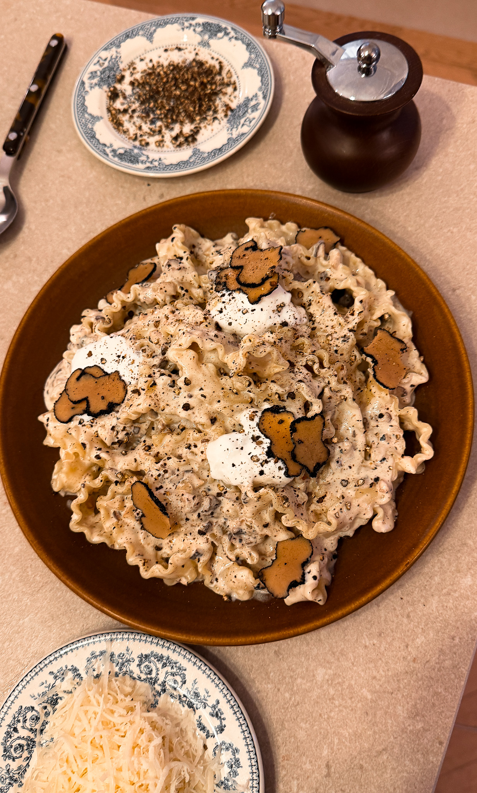
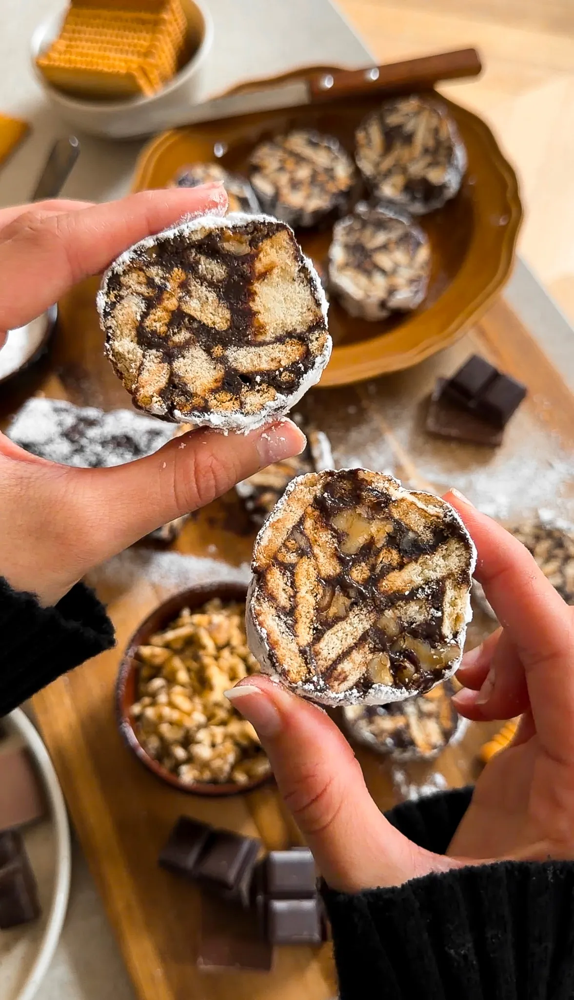
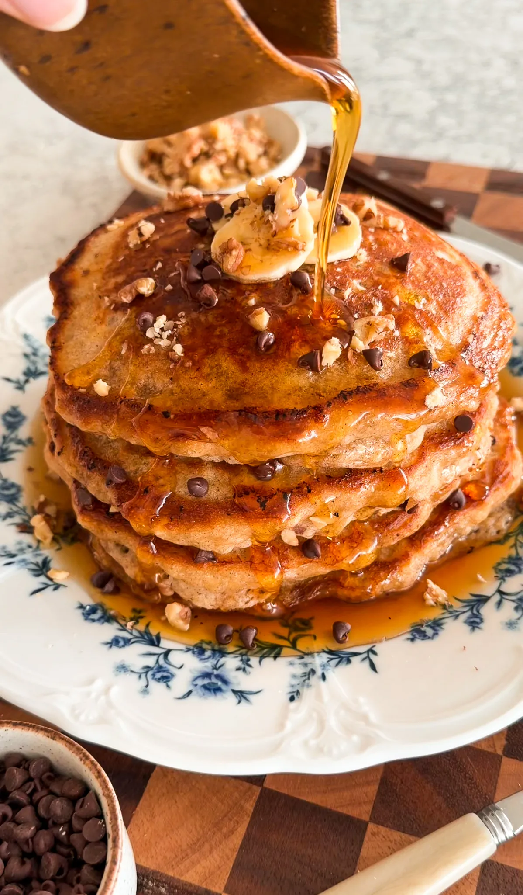

INGREDIENTS
- 8 ounces pasta, shape of choice
- 2 tablespoons unsalted butter
- 1 shallot, finely chopped
- 1 teaspoon garlic, minced
- 3 ounces brown mushrooms, very finely chopped
- 3/4 cup heavy cream
- 1/4 cup mascarpone
- 1/2 cup parmesan, finely grated, plus more for serving
- 1/2 cup pasta water, as needed
- Salt, to taste
- Black pepper, to taste
- 1 teaspoon truffle oil, more to taste
-
1 fresh truffle, optional, 1/2 finely shaved and 1/2 finely
chopped
Instructions
-
Cook the pasta: Bring a pot of well-salted water to
a boil and cook the pasta until al dente. Reserve pasta
water, then drain and set aside.
-
Build the sauce base: In a pan over medium heat,
melt the unsalted butter. Add the chopped shallot and cook
until soft and fragrant. Stir in the garlic and chopped
mushrooms and cook until the mushrooms are tender and
lightly golden.
-
Make it creamy: Pour in the heavy cream and let it
gently simmer for a minute. Add the mascarpone and stir
until completely melted and smooth.
-
Make it creamy: Pour in the heavy cream and let it
gently simmer for a minute. Add the mascarpone and stir
until completely melted and smooth.
-
Add truffle oil: Remove the pan from heat and stir
in the truffle oil to taste.
-
Add the pasta: Add the cooked pasta to the sauce
and toss until fully coated, adding more pasta water if
needed to achieve a glossy, saucy consistency.
-
Serve: Plate immediately and finish with extra
parmesan and black pepper if desired.

INGREDIENTS
- 7 ounces condensed milk
- 1/3 cup unsalted butter, cubed
- 1/4 cup cocoa powder
- 3/4 cup heavy cream
- 1/2 cup chopped semi-sweet chocolate
- 1 teaspoon vanilla extract
- Pinch of salt
- 8 ounces chopped tea biscuits
- 1 cup chopped walnuts
- powdered sugar, for dusting
Instructions
-
To a saucepan over medium heat, add the condensed milk,
butter, cocoa powder, and heavy cream. Cook, stirring
constantly, until the butter is melted and the mixture is
smooth and glossy.
-
Lower the heat and stir in the chopped chocolate, vanilla
extract, and salt until fully melted and combined. Remove
from the heat.
In a large bowl, add in the chopped tea biscuits and
walnuts, pour the chocolate mix over, and use a rubber
spatula to fold gently until everything is evenly coated.
-
Divide the mixture evenly between two pieces of plastic
wrap. Shape each portion into a log, then roll tightly to
seal.
-
Refrigerate until firm, at least 2 hours. Unwrap, dust the
logs generously with powdered sugar, then slice and serve.
Banana Bread Pancakes

INGREDIENTS
- 1 1/4 cup all-purpose flour
- 3 tablespoons brown sugar
- 2 teaspoons baking powder
- 1/2 teaspoon baking soda
- 1 teaspoon cinnamon
- 1/4 teaspoon salt
- 1 large egg
- 2 tablespoons unsalted butter, melted (plus more for pan)
- 1 teaspoon vanilla extract
- 1 cup cold buttermilk
- 2 ripe bananas, mashed
- 1/2 cup chopped walnuts
- 1/4 cup chocolate chips
Instructions
-
In a large bowl, mash the ripe bananas until mostly smooth
with a few small chunks left.
-
Whisk in the egg, melted butter, vanilla extract, and
buttermilk until combined.
-
In a separate bowl, whisk together the flour, brown sugar,
baking powder, baking soda, cinnamon, and salt.
-
Pour the wet ingredients into the dry and use a rubber
spatula to gently fold until just combined. Dont overmix
a few lumps in the batter are perfect.
-
Heat a nonstick pan or griddle over medium heat and add
about 1/2 tablespoon of butter to melt.
-
Scoop about 1/2 cup of batter for each pancake, or more
depending on how big or small you like them. Once the
batter hits the pan, sprinkle a few walnuts and mini
chocolate chips right on top before flipping.
-
Cook until bubbles form on top and edges look set, then
flip and cook the other side until golden brown.
-
Transfer to a plate and keep warm, then repeat with the
remaining batter, adding more butter to the pan as needed.
-
Serve warm with butter, maple syrup, and an extra sprinkle
of chocolate chips.